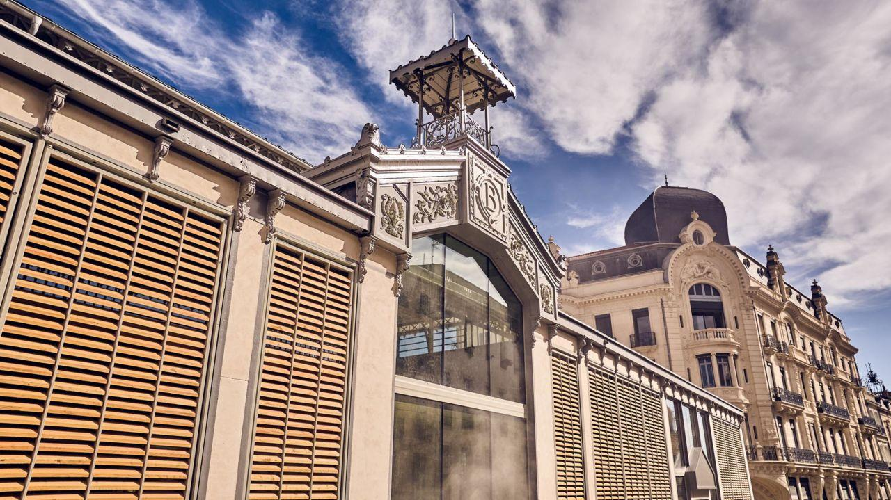
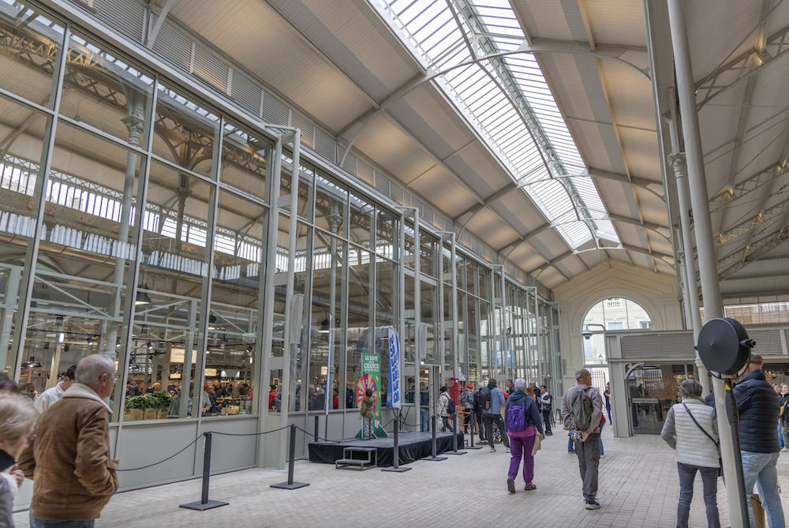
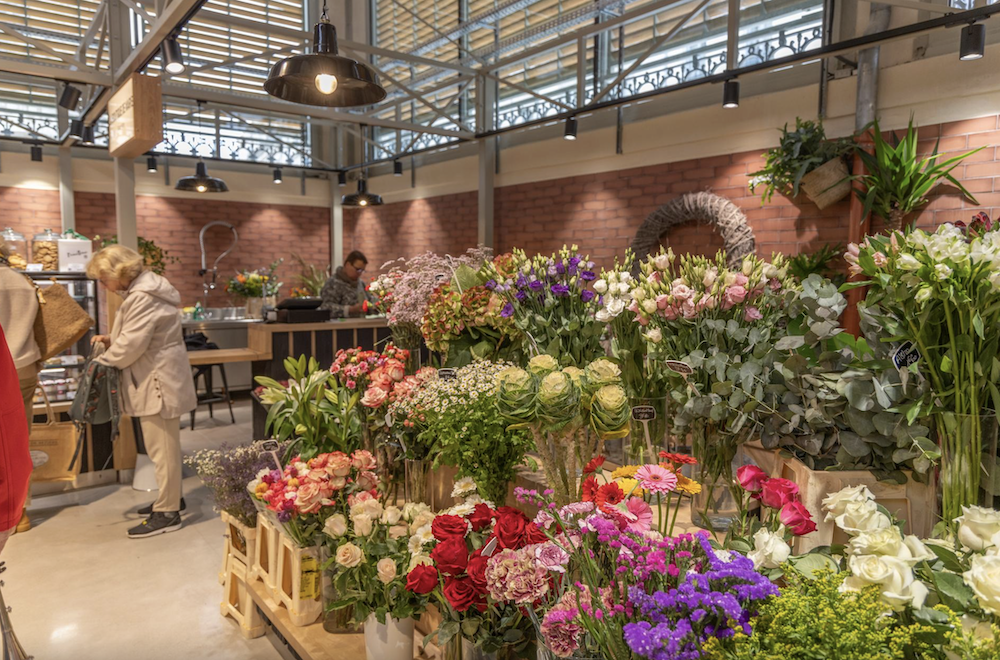
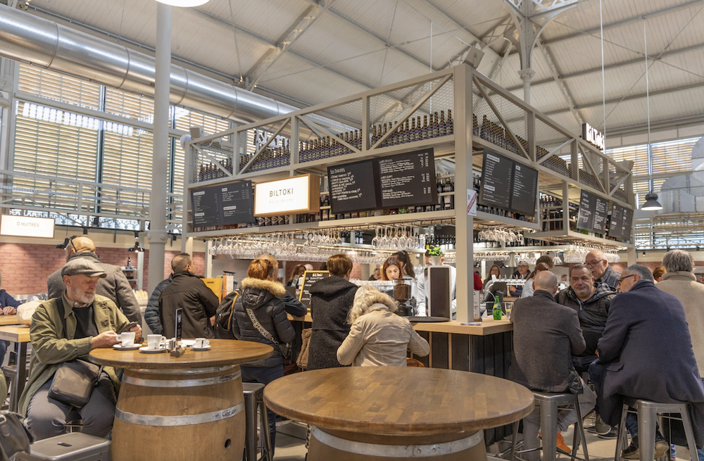
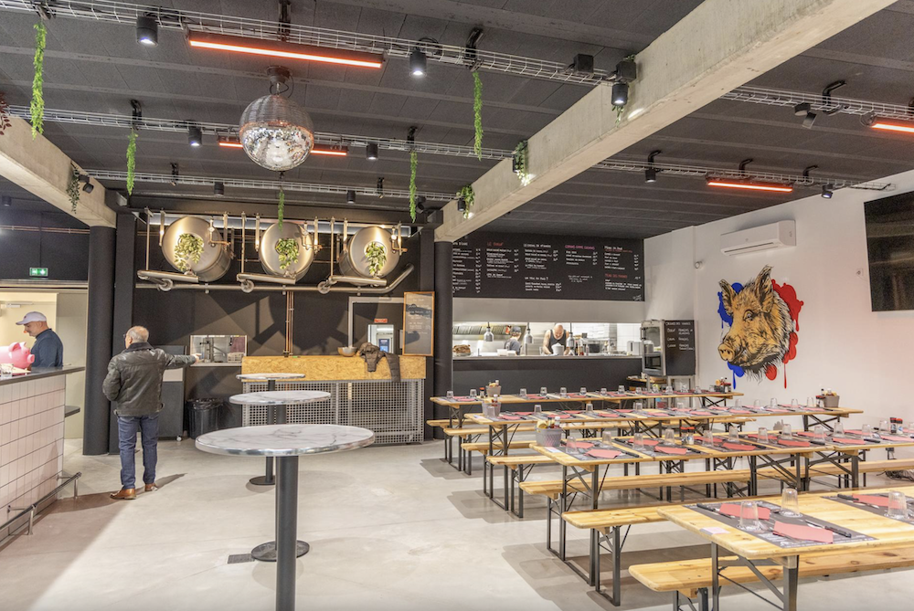

Les Halles de Béziers, de style Baltard, rénovées en 2024 et élues « Plus beau marché de France » 2025, accueillent chaque jour commerçants et producteurs locaux pour un moment gourmand, convivial et chargé d’histoire. Les Halles de Béziers, de style Baltard, datent de 1891 et ont été totalement rénovées en 1987 puis en 2024. Aujourd’hui, elles sont inscrites à l’inventaire supplémentaire des Monuments Historiques… et élues « Plus beau marché de France » en 2025 ! Mais avant d’être ce joyau gourmand, le site avait une histoire surprenante : au Moyen Âge, il accueillait l’église romane Saint-Félix, où, en 1247, le vicomte Raymond II Trencavel remit sa vicomté à Saint-Louis. L’église disparut en 1815, laissant place à un cimetière pour indigents… jusqu’aux grands travaux du XIXe siècle pilotés par le maire Alphonse Mas, qui firent naître les halles que l’on connaît aujourd’hui. Aujourd’hui, plus d’une vingtaine d’étals de commerçants et producteurs locaux font vivre le marché tous les jours, attirant habitants et visiteurs pour un moment de gourmandise et de convivialité à la Béziers !
D’une surface de 2800 m², elles représentent la plus grande surface de produits frais de la ville. La plupart des métiers de bouche y sont implantés : boulangers, pâtissiers, fromagers, charcutiers, bouchers, traiteurs, poissonniers, primeurs, volaillers, épiceries fines et bio, bars, cafés, cavistes… La gastronomie locale y est largement représentée. Sans oublier les bars et restaurants où règne une ambiance chaleureuse et conviviale.




Du mardi au dimanche
8h à 14h
Du mardi au samedi : 11h → 15h et 18h → 23h
Dimanche : 11h → 17h
Ouvert en continu du mardi au dimanche dès 8h
Gare de Béziers – moins de 20 min à pied
Arrêt Béziers – Gare Routière
Place Jean Jaurès, 34500 Béziers, France
Téléphone : 04 67 49 25 45
Email : beziers@biltoki.com
Voir sur OpenStreetMap